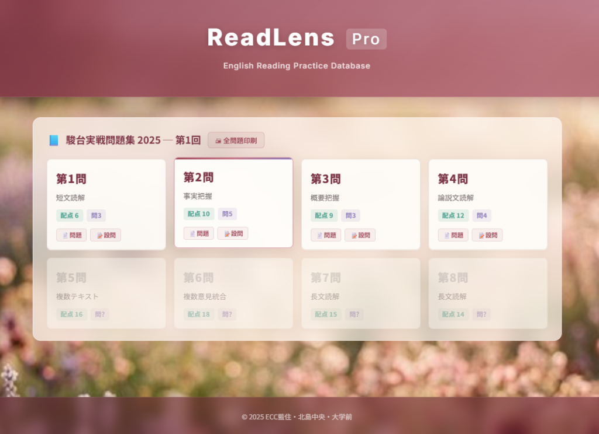
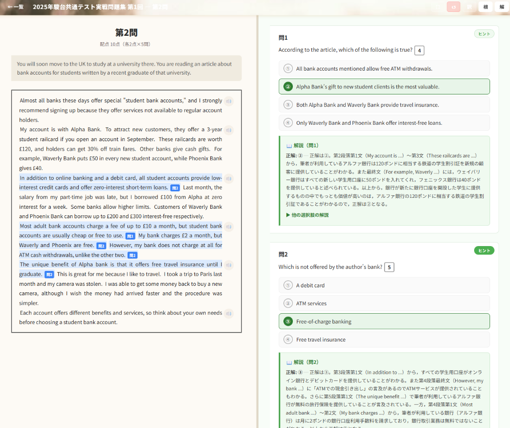
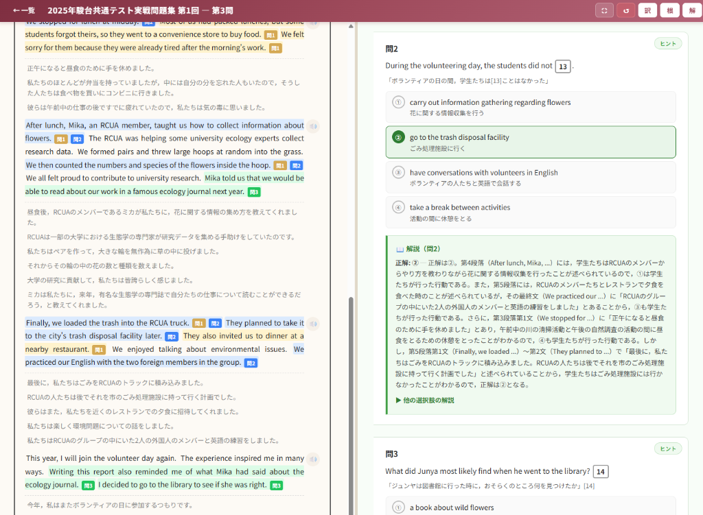

📋 ReadLens Pro とは
駿台・河合塾等の共通テスト実戦模試のリーディング問題を、インタラクティブなWebアプリに変換したプラットフォームです。
本文と設問を見開きレイアウトで表示し、正解の根拠文をハイライト表示、文ごとの和訳ポップアップ、段落ごとのネイティブ音声再生など、
従来の紙教材では実現できなかった根拠ベースの読解指導を可能にします。
4択問題・整序問題・エッセイ添削問題など多様な出題形式に対応したUIを搭載し、
印刷テスト→アプリ復習の2段階で授業と家庭学習をシームレスに接続します。

▍授業での3つの活用シーン
📝 SCENE 1：印刷テスト → アプリ復習
▲ 大問ごとに問題・設問を個別印刷
大問ごとに問題と設問を別々に印刷し、テスト形式で演習。解答後はアプリで根拠確認→解説閲覧→和訳精読→音声聴取の4段階復習。「解いて丸付けして終わり」の学習から脱却させます。
| モード | 用途 |
|---|
| 📄 問題のみ | 教室テスト・宿題 |
| 📝 設問のみ | 本文投影＋紙配布 |
| 📋 全問題一括 | 模試形式の総合演習 |
🔍 SCENE 2：根拠ベースの読解指導

▲ 根拠文の色分け＋解説パネル
「なぜこの答えか？」を視覚的に示せます。正解の根拠箇所が色分けハイライトで一目瞭然。不正解選択肢の理由も含めた詳細解説で、消去法の思考プロセスまで指導可能です。
| 機能 | 指導への効果 |
|---|
| 根拠ハイライト | 根拠箇所を色分け |
| 解説一括表示 | 不正解の理由も指導 |
| 文クリック和訳 | 精読のポップアップ |
🇯🇵 SCENE 3：語彙・精読・リスニング
▲ 文ごとの和訳＋ネイティブ音声
「訳」ボタンで文ごとの和訳を一括表示。段落ごとに整理された訳文でパラグラフリーディング指導に直結。全段落にネイティブ音声🔊を搭載し、「読む→聴く」のシームレスな学習で4技能を横断的に強化します。
▍画面イメージ
🖥 和訳＋設問の見開きレイアウト
左ペイン：英文＋和訳＋音声ボタン ｜ 右ペイン：設問＋選択肢＋解説。テキストと設問を同時に参照でき、スクロール連動で効率的な学習が可能。

📐 根拠＋和訳＋解説の統合表示
根拠ハイライト・和訳・詳細解説のすべてを同時表示。消去法の過程も可視化され、生徒の思考プロセスを一目で把握できます。
▍従来指導との比較
| 観点 | 従来 | ReadLens Pro |
|---|
| 教材準備 | コピー＋切り貼り | ワンクリック印刷 |
| 根拠の提示 | 口頭説明のみ | ハイライトで視覚化 |
| 復習の仕組み | 生徒任せ | アプリで自走可能 |
| リスニング | 別教材が必要 | 全文音声内蔵 |
| 解説の深さ | 正解番号のみ | 不正解の理由まで |
| 出題形式 | 4択のみ対応 | 整序・添削も対応 |
▍導入メリット
01
授業効率化
教材準備・採点の手間を大幅に削減。空いた時間で個別指導に注力できます。
02
指導品質の均一化
根拠・解説が構造化されており、講師間の指導のバラつきを解消します。
03
生徒の自走力強化
自宅でもアプリで復習でき、「やりっぱなし」を防止。自立学習を促進します。
04
段階的指導が可能
印刷テスト→アプリ復習の2段階で、授業と家庭学習を接続します。